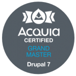
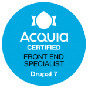
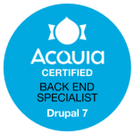
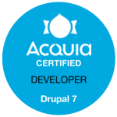

Profiles
Minsk, Belarus
Polska, Kraków.
Acquia Certification
   Licenses & certifications
Debugging in Go by Pinal Dave
Pluralsight, Issued Nov 2022Practical Python for Beginners By Sarah Holderness
Pluralsight, Issued Nov 2022Creating Custom Data Types with Go by James Wilson
Pluralsight, Issued Sep 2022Go: The Big Picture by Mike Van Sickle
Pluralsight, Issued Aug 2022Język angielski na poziomie B1 (A-, 90%)
Busuu, Issued Jul 2022Język angielski na poziomie A1 (B, 86%)
Busuu, Issued Jul 2022Język angielski na poziomie A2 (A+, 100%)
Busuu, Issued Jul 2022Object-Oriented PHP by Jill Gundersen
Pluralsight, Issued Sep 2021Unit Testing with PHPUnit by Anna Filina
Pluralsight, Issued Sep 2021Microservices Security by Wojciech Lesniak
Pluralsight, Issued Jul 2021AWS Developer: An Introduction to AWS Lambda by Fernando Medina Corey
Pluralsight, Issued Jun 2021CQRS in Practice by Vladimir Khorikov
Pluralsight, Issued Jun 2021Building Distributed Applications with Go by Mike Van Sick
Pluralsight, Issued May 2021Clean Architecture: Patterns, Practices, and Principles by Matthew Renze
Pluralsight, Issued May 2021Concurrent Programming with Go by Mike Van Sickle
Pluralsight, Issued May 2021Fundamental Cloud Concepts for AWS by David Tucker
Pluralsight, Issued May 2021Modern Software Architecture: Domain Models, CQRS, and Event Sourcing by Dino Esposito
Pluralsight, Issued May 2021Moving Beyond JSON and XML with Protocol Buffers by Mike Van Sickle
Pluralsight, Issued May 2021Testing Go Applications by Mike Van Sickle
Pluralsight, Issued May 2021PHP Design Patterns by Annapurna Agrawal
Pluralsight, Issued Apr 2021📚The Unicorn Project: A Novel about Developers, Digital Disruption, and Thriving in the Age of Data
by Gene Kim (Author), 2020📚The Phoenix Project: A Novel about IT, DevOps, and Helping Your Business Win
by Gene Kim (Author), Kevin Behr (Author), George Spafford (Author), 2019📚A Philosophy of Software Design
by John K. Ousterhout, 2019📚Clean Code. A Handbook of Agile Software Craftsmanship
by Robert C. Martin, 2019📚Release It! Design and Deploy Production Ready Software
by Michael T. Nygard, 2018📚The Imposter's Handbook
by Rob Conery, 2018Introduction To Programming. Beginner
GeekBrains, Issued Jul 2017, Credential ID 0264286📚Domain-Driven Design: Tackling Complexity in the Heart of Software
By Eric Evans, 2016Acquia Grand Master
Acquia, Issued Jan 2015Acquia Certified Developer - Back end Specialist
Acquia, Issued Dec 2014Acquia Certified Developer - Front end Specialist
Acquia, Issued Dec 2014Acquia Certified Developer
2014 Acquia, Issued Dec 2014English Intermediate
New English File, 2014English Click On 3
English, 2013English Pre-Intermediate
"Outlook" Educational Center, 2013Elementary Companion
Streamline Language School, 2012SEO courses by Artox-Media
Minsk, 2010